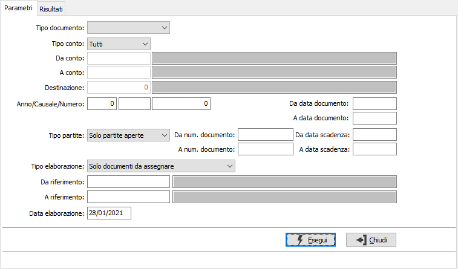
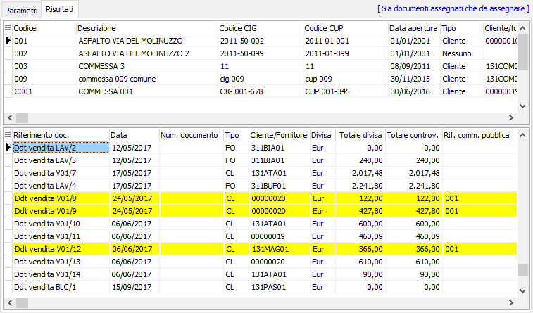
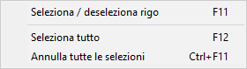

Assegnazione commesse pubbliche
Tramite il programma di “Assegnazione commesse pubbliche” è possibile assegnare e disassegnare il riferimento alla commessa pubblica ai documenti aperti (da evadere o da contabilizzare) ed alle scadenze.

Saranno selezionate le commesse pubbliche valide alla "Data elaborazione"
Sul campo “Tipo documento” deve essere indicato il tipo documento che si vuole assegnare, in questo campo possono essere indicati i documenti su cui è attiva da configurazione la gestione e le partite aperte clienti e fornitori.
Nel caso in cui sia impostato di assegnare tutti i documenti non vengono richiesti altri parametri di selezione, mentre se viene selezionato uno specifico tipo documento vengono richiesti gli specifici parametri di selezione.
Il campo “Tipo elaborazione” permette di visualizzare:
solo documenti da assegnare: nei risultati vengono visualizzati per ogni commessa solo i documenti da assegnare, se la commessa risulta associata ad un cliente/fornitore saranno visualizzati tutti i documenti intestati al cliente/fornitore, se la commessa non risulta assegnata vengono visualizzati tutti i documenti
solo documenti assegnati: nei risultati vengono visualizzati per ogni commessa solo i documenti assegnati alla commessa stessa
sia documenti assegnati che da assegnare: nei risultati vengono visualizzati per ogni commessa solo i documenti assegnati alla commessa stessa e tutti i documenti da assegnare


I documenti e le partite assegnate alla commessa su cui siamo posizionati sono quelle evidenziate in giallo, per ogni commessa vengono visualizzati anche i documenti e le partite da assegnare.Tramite la pressione del tasto destro del mouse (o i relativi tasti funzione) viene aperto il menù di selezione/deselezione.
Un documento che viene disassegnato da una commessa diventa assegnabile anche per le altre commesse, mentre un documento che viene assegnato ad una commessa non viene più visualizzato come assegnabile per le altre commesse.